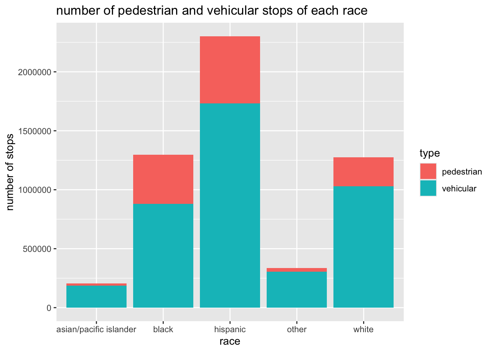
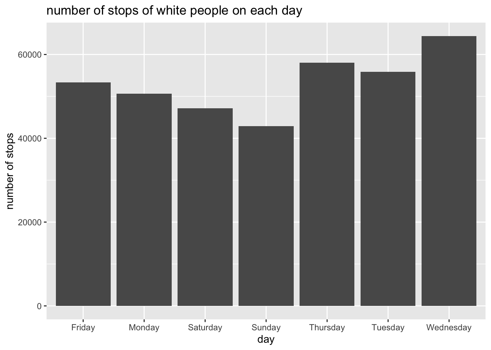
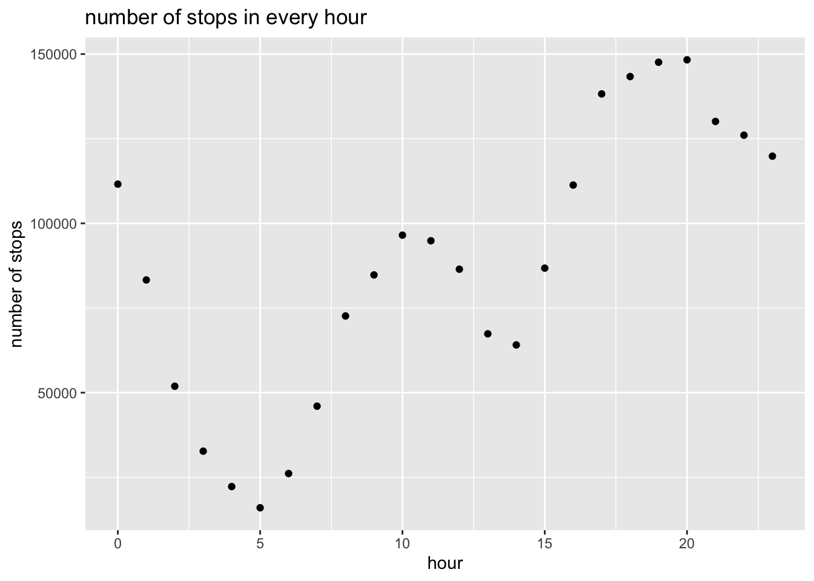

library(ggplot2)
library(tidyr)
con_traffic <- DBI::dbConnect(
RMariaDB::MariaDB(),
dbname = "traffic",
host = Sys.getenv("TRAFFIC_HOST"),
user = Sys.getenv("TRAFFIC_USER"),
password = Sys.getenv("TRAFFIC_PWD")
)SQL
Data Analysis with SQL
In this analysis, I used SQL to query a database that includes both city PD as well as highway patrol traffic incidents from 42 different states (Pierson et al., 2020). I picked three data sets that recorded data from three areas: Los Angeles, San Francisco, and Chicago. In the three data sets, I delved into the the total number of traffic stops (pedestrian or vehicular) and examined its relationship with other variables such as race, day, and hour. For each analysis, I made a plot to visualize the data and we could make some conclusions based on the plot.
SELECT type, COUNT(*) AS num_stops, subject_race
FROM ca_los_angeles_2020_04_01
GROUP BY subject_race, type
ORDER BY type, num_stops;race_table |>
drop_na(type) |>
ggplot(aes(x = subject_race, y = num_stops, fill = type)) +
geom_bar(stat = "identity") +
labs(x = "race", y = "number of stops", title = "number of pedestrian and vehicular stops of each race")
The code above represents my first analysis. I picked the data set from Los Angeles. I made a bar plot where the x-axis is the race of the subjects and the y-axis is the total number of stops. The blue region represents the number of vehicular stops and the red region represent the number of pedestrian stops. From the plot, there are more vehicular stops than pedestrian stops among all races. Hispanic people have the greatest number of stops, followed by black, white, other and asian/pacific islander.
SELECT count(*) AS num_stops, DAYNAME(date) AS wday
FROM ca_san_francisco_2020_04_01
WHERE subject_race = "white"
GROUP BY wday
ORDER BY num_stops DESC;white_wday_table |>
ggplot(aes(x = wday, y = num_stops)) +
geom_bar(stat = "identity") +
labs(x = "day", y = "number of stops", title = "number of stops of white people on each day")
In the second analysis, I looked at the data set from San Francisco. I only focused on the data from white subjects. I made a bar plot where the x-axis is the day of a week and the y-axis is the total number of stops. The plot shows that in San Francisco, there are a larger number of traffic incidents on one of the weekdays than on one of the weekends. Wednesday have the greatest number of stops, followed by Thursdays, Tuesdays, Fridays, Mondays, Saturdays, and Sundays.
SELECT count(*) AS num_stops, EXTRACT(HOUR FROM time) AS hour
FROM il_chicago_2023_01_26
GROUP BY hour
ORDER BY num_stops DESC;hour_table |>
ggplot(aes(x = hour, y = num_stops)) +
geom_point() +
labs(y = "number of stops", title = "number of stops in every hour")
In the third analysis, I examined the data set from Chicago. I wanted to know the number of stops in each hour. Therefore, I made a scatterplot where the x-axis is each hour of a day and the y-axis is the number of total stops. Results showed that most of the traffic incidents occurred during the night, from 5pm to 12am. 8pm has the most number of total stops, followed by 7pm, 6pm, 5pm, 9pm, 10pm, 11pm, 12am, 4pm, 10am, 11am, 3pm, 12pm, 9am, 1am, 8am, 1pm, 2pm, 2am, 7am, 3am, 6am, 4am, and 5am.
In short, I focused on the data sets of traffic incidents in Los Angeles, San Francisco, and Chicago. In the first analysis, I explored the relationship between race and the number of stops (categorized as pedestrian and vehicular) in Los Angeles. It was found that Hispanic people have the most stops among all the races, and vehicular stops are more than pedestrian stops. In the second analysis, I scrutinized the number of stops in different days of a week in San Francisco. I found that there are more stops on the weekdays than weekends. In the third analysis, I examined the number of stops in each hour of a day. It was found that most traffic incidents happened between 5pm to 12am.
References
Pierson, Emma, Camelia Simoiu, Jan Overgoor, Sam Corbett-Davies, Daniel Jenson, Amy Shoemaker, Vignesh Ramachandran, et al. 2020. “A Large-Scale Analysis of Racial Disparities in Police Stops Across the United States.” Nature Human Behaviour, 1–10.